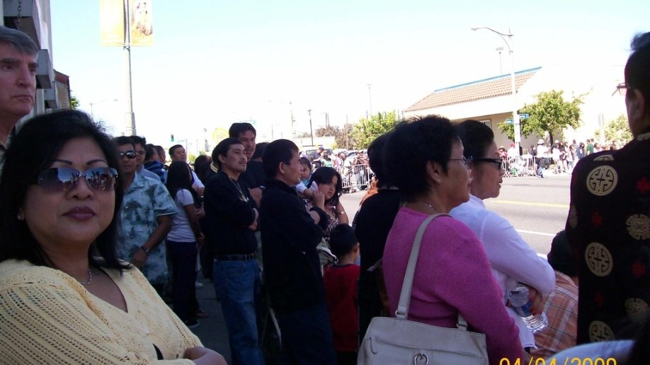
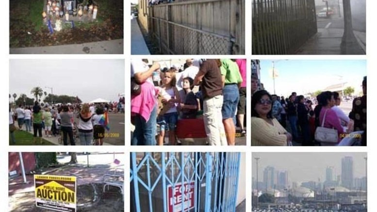
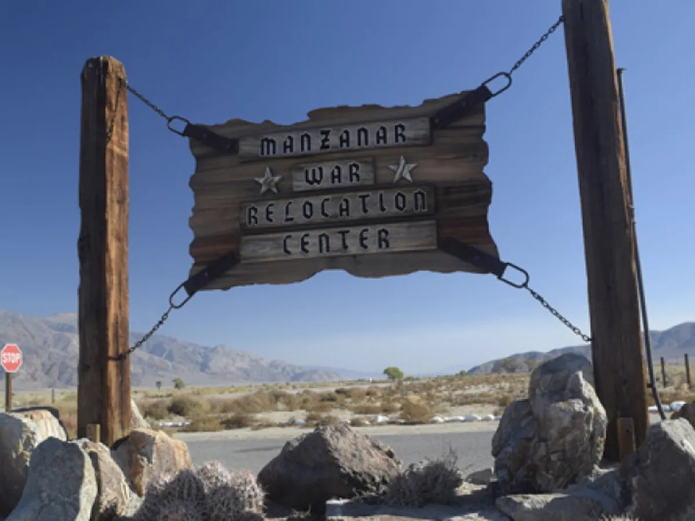
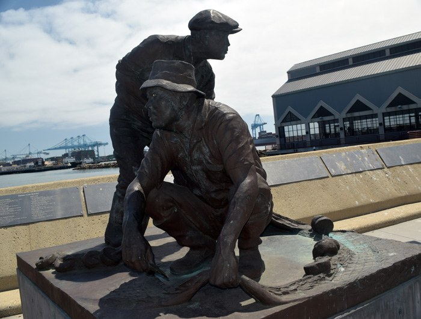
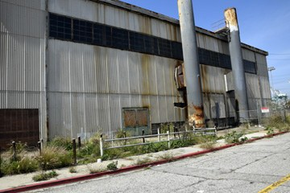
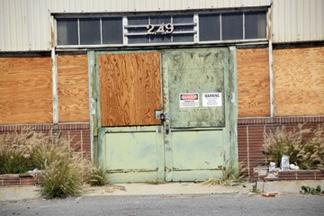
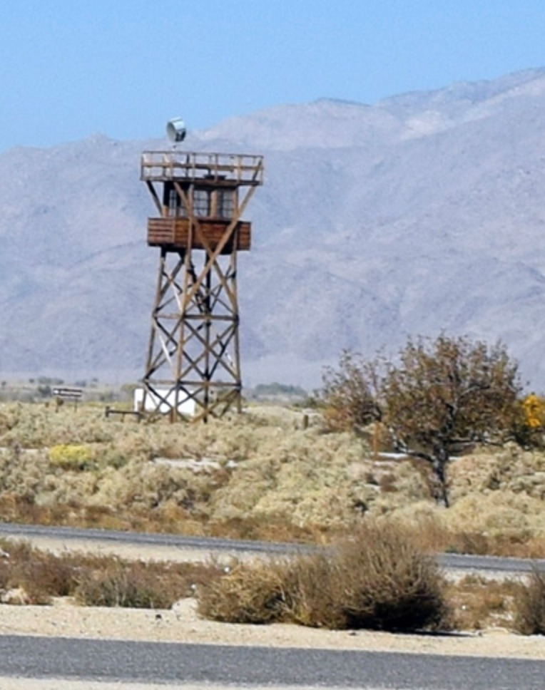
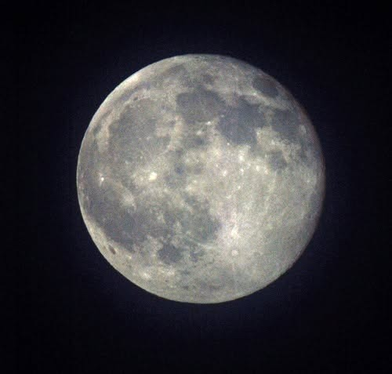
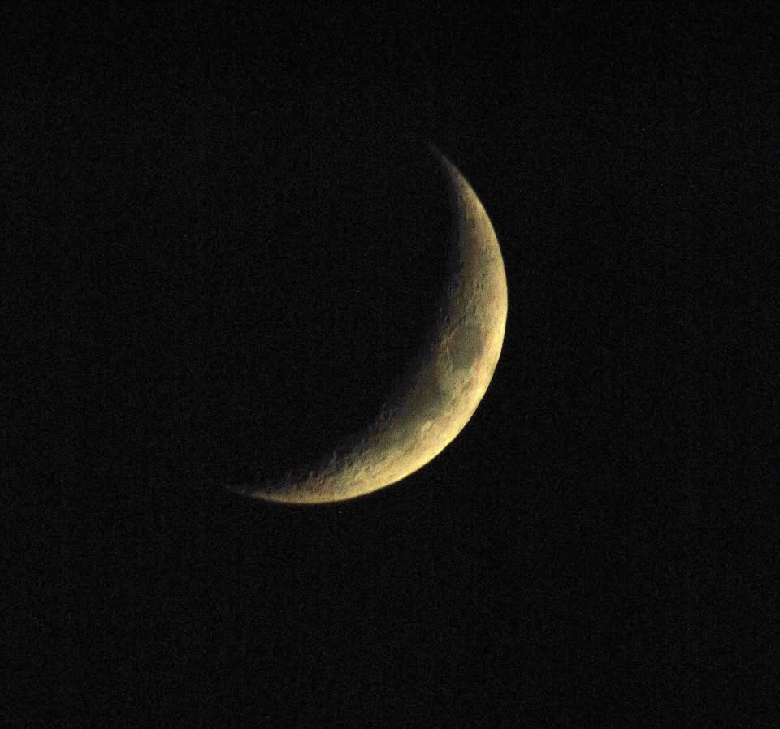
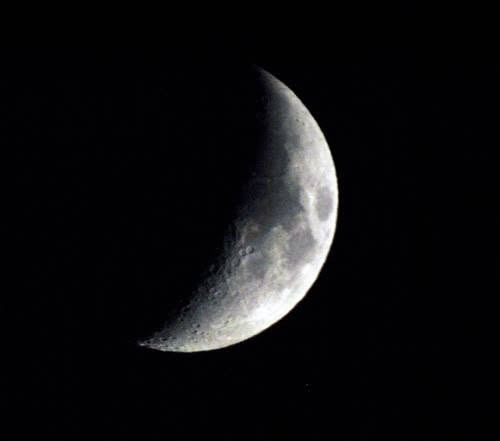

Long-term, ongoing bodies of work.
Four projects built over decades of patient, close-in observation — some finished, some still growing.
Images on this page are shown at reduced resolution to protect the original files, which are available for purchase as prints. Full-resolution versions are available through the Shop.
Intersections: Portraits of Neighborhoods
Begun in 2008 after Lisa moved to Long Beach, this project asks participants — from 5th graders to university students — to walk their own neighborhoods and photograph what catches their attention. It has been used in more than a dozen classrooms, supported by a small ArtRelease grant, and exhibited at Hot Java in Long Beach.


From Here to Manzanar
Documents the WWII incarceration of the Japanese American community from Terminal Island (formerly East San Pedro) — the first community sent to Manzanar. Combines photography with interviews and written testimony from people who were interned.





My Photo Records: Three Decades of Photos
A portfolio of black-and-white documentary and newsprint photography, drawn from six photo essays created between 1980 and the present.
- Power in the Black Belt: I Will Vote On — voting rights in southwest Alabama
- It Was Just an Aberration — Los Angeles police abuse, 1987–1992
- INS Detention Centers — a 1987 immigration detention protest in Inglewood
- Homeless in Los Angeles (Housing Insecurity)
Read Lisa's artist statement for this project, including portrait, event, restoration, and preservation work.
Moon Series
A personal project photographing the moon across its phases and every season, built through years of patient night observation.


